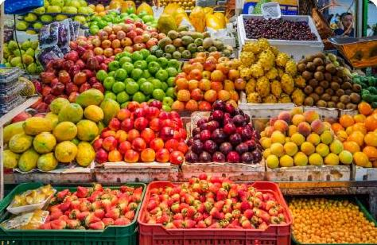

Bienvenidos a VerdeVida Market

En VerdeVida Market nos dedicamos a ofrecer los mejores productos orgánicos, cultivados de manera sostenible y respetuosa con el medio ambiente. Nuestra misión es promover una alimentación saludable mientras apoyamos a agricultores locales.
Todos nuestros productos son 100% orgánicos, libres de pesticidas y químicos dañinos. Creemos en un modelo de negocio que beneficia tanto a nuestros clientes como a nuestro planeta.